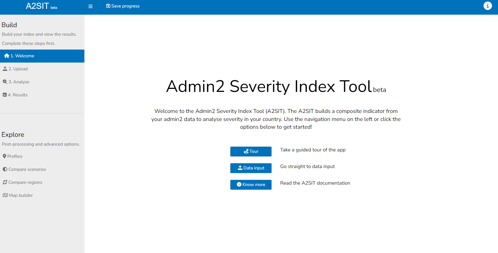
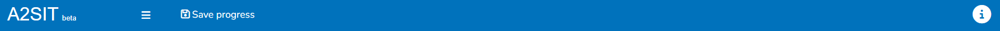

2 App layout
Let’s begin by exploring the basic layout of the app. When you load the app, you will first see the landing page:

The best way to get a quick intro to the app is to click the “Tour” button, which will give a short interactive guided tour of the layout of the app. Here we give a little more description.
First, the app is divided into a main window, a header and a sidebar.
- The main window is where the main content of the app is: the plots, tables, etc.
- The header gives some general tools which available at any point
- The sidebar lets you navigate between the different tabs in the app.
The app is generally meant to be used by working through the tabs from top to bottom.
2.1 Main window
There is not much to say about the main window, since it is different for each tab, and is described in much more detail in the following chapters. Suffice to say here that the buttons on the welcome screen include the guided tour, another button “Data input” which takes you to the “Upload” tab, and the “Know more” button which takes you to this online book.
Depending on the size of your screen, the main window can sometimes become cluttered. Two ways to improve this are:
- Minimise the sidebar (see next section)
- Use the “zoom” function in your browser. E.g. on Chrome hold the “Ctrl” button and scroll the mouse wheel to zoom out - this will make the text smaller but you will be able to see more content at once. You can also zoom in if you need to!
2.3 Header
The header contains several useful features which can be accessed at any time.

On the right side, the help icon gives a pop-up help window. The window is different for each tab, and gives specific help for that tab. However, the most detailed help is available in this book.
The “Save progress” button can be used to generate a link which allows you to return your app session in the future, and can be shared with others. This is generally only useful once you have uploaded data. In that case, at any point in the app, copy the bookmark link. You can put this link back in your browser at any point to return to the same point in the app, with your data saved. Keep in mind that:
- The bookmark link takes you back to the exact point when you saved: it will not remember anything you did after you created the bookmark
- Please don’t create more bookmarks than necessary - each one takes up server space
- We may delete old bookmark files if necessary, to avoid overloading the server space if necessary. To add a policy here maybe, if we need to